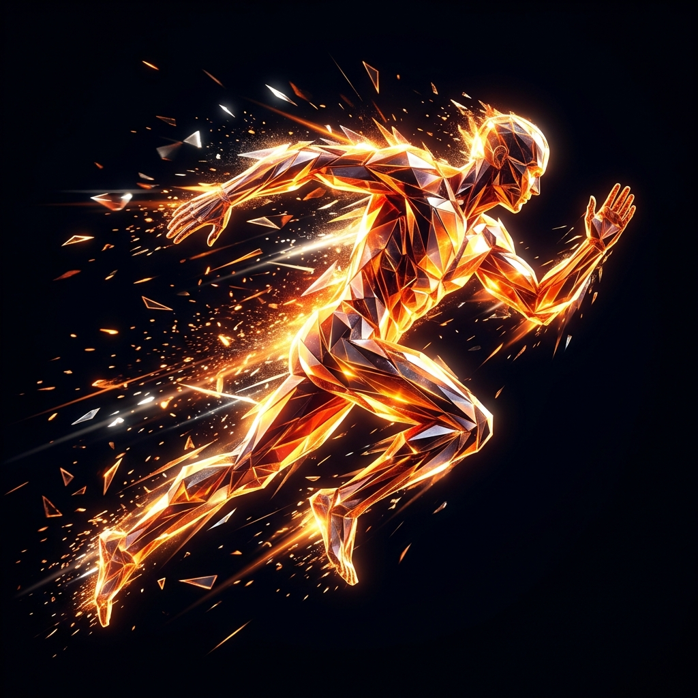

Every system we ship is built from the same five research primitives — each engineered with hard latency budgets and verifiable telemetry.
The core of "The Agentic Brain" — directs goal-oriented action across the full neural stack. Decomposes objectives, dispatches sub-tasks to expert modules, and reconciles partial results into a single executable plan.
Mimics the sequential way the brain handles time-ordered signals — events, conversations, market ticks and sensor streams — producing a temporal embedding that downstream synthesis layers consume.
Hierarchical knowledge clustering that fuses structured tables, unstructured text and sensor telemetry into one queryable manifold of attributes the agent can reason over.
Real-time priority scheduler that ranks every candidate action by impact, cost and reversibility — keeping the swarm focused on the next highest-value move at all times.
Generates actionable outcomes from synthesized insights — emits code, API calls, robotic commands and analyst-ready briefs, all sourced and citable back to the originating signal.
Five layers, sparse mixture-of-experts routing, and per-token activation — visualized from real activations sampled in our test environment.
Each token is routed to a small subset of expert sub-networks. Cuts inference cost by ~7× versus a dense model of the same parameter count, with no measurable quality drop.
Vision, audio, telemetry, structured data and language streams fused into a unified token space.
Sequence-aware encoder captures order, rhythm and causality across the last 2,048 steps.
128 experts, 8 active per token. Hierarchical knowledge clustering and pattern synthesis.
Goal decomposition, planner and execution priority queue. The "central chip" of the brain.
Every output is fact-checked, sourced and traced back to its originating signal before release.
Code, API calls, robotic commands and analyst briefs — emitted with full audit lineage.
A single signal flows through five stages — captured, contextualised, planned, verified and executed — in under 70 milliseconds end-to-end.
First end-to-end prototype combining LSTM temporal encoder, dense reasoner and a hand-coded planner. Baseline for all subsequent work.
Migrated the synthesis layer from dense to 128-expert MoE with top-8 routing — 7× cheaper inference at parity quality.
Critic-LM, lineage graph and quorum voting deployed. Hallucination rate on production traffic drops by 86%.
Fullerene mesh topology brings 300K+ agents to 11ms consensus. First fully autonomous customer deployment.
ROS-2 and Tool-API output channels added. Same brain now drives both digital agents and physical robots.
Current generation. 1.4T active parameters, 128k context, 91.4% MMLU-Pro. Powering every Pure AI deployment in the field.
Online weight updates from production traffic with safety gating — no nightly retraining cycle.
Joint reasoning over vision, audio and text within a single attention pass — replacing pipeline stitching.
Hierarchical task networks that plan 90+ steps ahead with rolling re-evaluation at every 8 steps.
Learning explicit causal graphs from interaction data so the agent can simulate consequences before acting.
Lattice-based weight encryption with sub-millisecond decryption inside the silicon enclave.
Robots that diagnose and re-calibrate their own sensors after damage — without returning to base.
Naolytics turns enterprise data into living intelligence. AIKAGE turns that intelligence into automated action. Together they form a self-sustaining loop that runs at machine speed.
Data-First AI Transformation & Analytics Partner
A specialized analytics platform that unlocks value across cloud data estates — end-to-end data engineering, machine learning, and generative AI turning raw signal into actionable intelligence.
Visit Naolytics →
Advanced Enterprise Intelligent Automation
An enterprise-focused platform that moves organizations beyond dashboards into a dynamic, AI-driven operational model — intelligent automation, analytics, and decision support on one surface.
Visit AIKAGE →We work with research labs, frontier model teams and enterprise R&D groups on joint deployments and applied research collaborations.